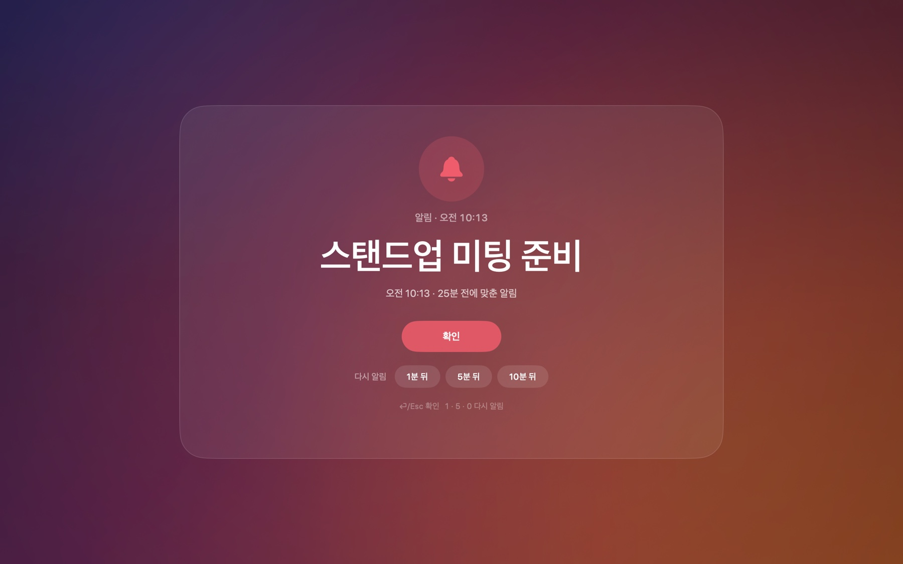
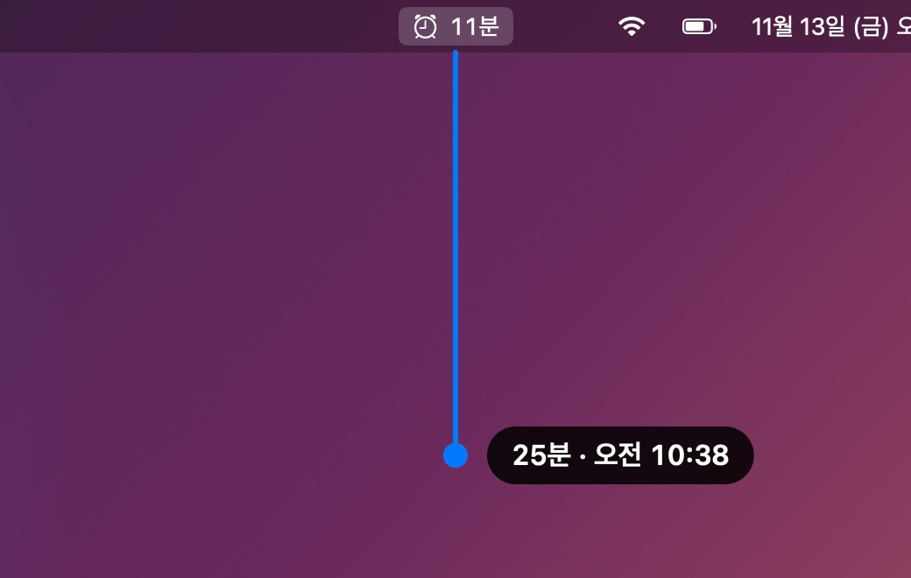
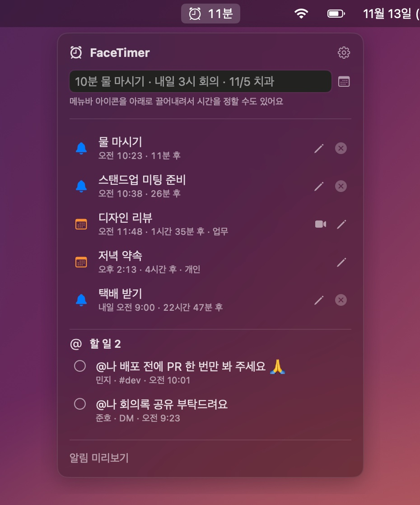
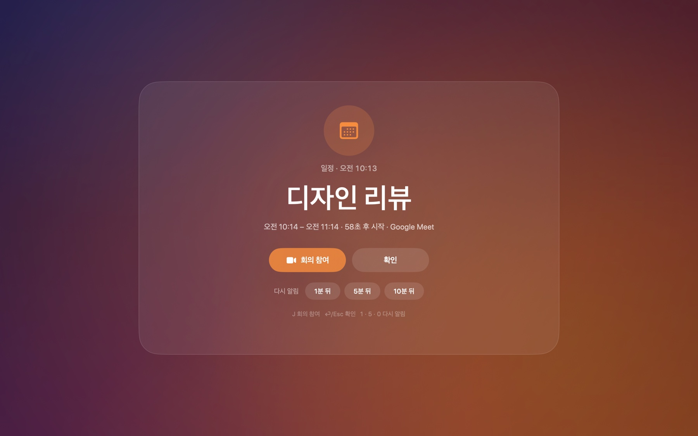
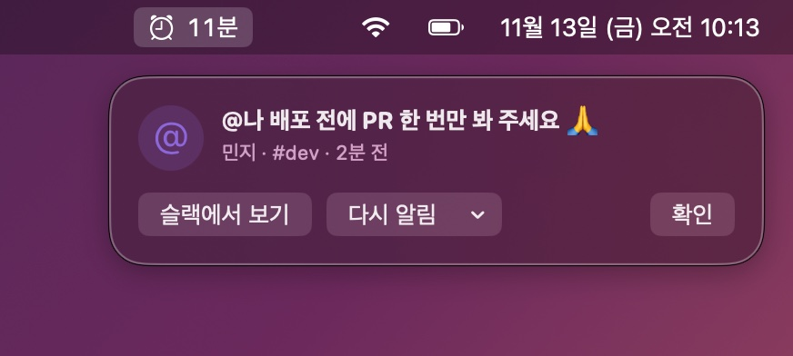
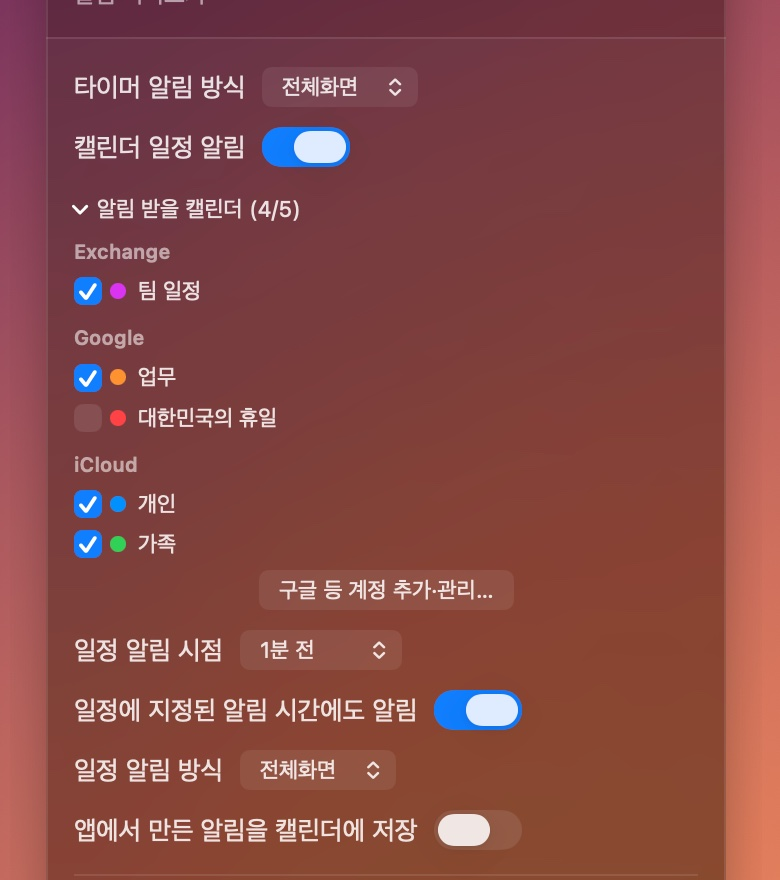

1. 끌어내려서 시간 정하기
메뉴바의 ⏰ 아이콘을 마우스로 잡고 아래로 끌어내리세요. 많이 끌수록 시간이 길어지고, 몇 분 뒤 몇 시인지 바로 보여 줘요.
손을 놓으면 작은 입력창이 뜨는데, 무엇을 알려 줄지 적고 ⏎를 누르면 끝이에요.
- 30분까지는 1분 단위, 2시간까지는 5분 단위
- 그 뒤로는 24시간까지 15분 단위
작은 알림창은 일에 집중하다 보면 그냥 지나치기 쉬워요. FaceTimer는 때가 되면 화면 전체에 크게 알려 줘요. 회의 시작, 약속 시간, 슬랙 멘션까지 한곳에서 챙길 수 있어요.

기능
화면 오른쪽 위 메뉴바의 ⏰ 아이콘 하나로 모든 걸 해요. 다음 알림까지 남은 시간도 아이콘 옆에 보여 줘요.
메뉴바의 ⏰ 아이콘을 마우스로 잡고 아래로 끌어내리세요. 많이 끌수록 시간이 길어지고, 몇 분 뒤 몇 시인지 바로 보여 줘요.
손을 놓으면 작은 입력창이 뜨는데, 무엇을 알려 줄지 적고 ⏎를 누르면 끝이에요.

⏰ 아이콘을 클릭하면 메뉴가 열려요. 입력창에 평소 말하듯 적으면 날짜와 시간을 알아서 알아들어요. 입력하는 동안 아래에 언제로 잡히는지 미리 보여 줘요.
10분 물 마시기1h30m 빨래오후 3시 반 미팅
내일 9시 보고금요일 2시 회의다음주 월요일 10시
11/5 15:00 치과3일 후 택배
시간을 빼고 날짜만 적으면 그날 오전 9시로 잡혀요. 입력창 옆 📅 버튼을 누르면 달력에서 직접 고를 수도 있어요. 만든 알림은 ✏️ 버튼(또는 더블클릭)으로 언제든 고칠 수 있어요.

맥에 연결해 둔 iCloud·구글·Exchange(Outlook) 캘린더 일정을 시작 직전에 전체화면으로 알려 줘요. 따로 등록할 필요 없이 캘린더에 있는 일정이면 돼요.
일정에 Zoom·Google Meet·Teams 링크가 있으면 회의 참여 버튼이 생겨서, 누르거나 J만 치면 바로 회의에 들어가요.

슬랙에서 누가 나를 태그하면 오른쪽 위에 작은 배너로 알려 주고, 메뉴의 할 일 목록에 모아 둬요. 바로 확인 못 해도 10분 뒤에 한 번 더 알려 줘요.
슬랙에서 보기를 누르면 브라우저를 거치지 않고 슬랙 앱의 그 메시지로 바로 가요. 처리한 할 일은 ○를 눌러 지우면 돼요.

설치
개인이 만든 앱이라 애플의 공증 절차를 거치지 않았어요. 그래서 처음 한 번만 "열어도 괜찮다"고 맥에 알려 줘야 해요. 그다음부터는 평범한 앱처럼 쓰면 되고, 업데이트도 알아서 돼요.
맨 위의 다운로드 버튼을 눌러 FaceTimer-버전.dmg 파일을 받아요. 보통 '다운로드' 폴더에 저장돼요.
받은 DMG 파일을 더블클릭하면 창이 열려요. 창 안의 FaceTimer 아이콘을 옆의 Applications 폴더로 끌어다 놓으세요.
Applications 폴더(또는 Launchpad)에서 FaceTimer를 열면 "Apple은 악성 코드가 없음을 확인할 수 없습니다" 같은 경고가 떠요. 놀라지 말고 완료(또는 취소)를 누른 뒤:
터미널이 익숙하다면 아래 명령 한 줄로 대신할 수 있어요.
xattr -dr com.apple.quarantine /Applications/FaceTimer.app창은 뜨지 않고 화면 오른쪽 위 메뉴바에 ⏰ 아이콘이 생겨요. 캘린더 접근을 물어보면 허용해 주세요. 맥을 켤 때마다 자동으로 실행돼요(설정에서 끌 수 있어요).
제대로 뜨는지 보고 싶다면 메뉴 아래쪽의 알림 미리보기를 눌러 보세요.
캘린더 연동
FaceTimer는 맥의 기본 캘린더 앱에 연결된 일정을 그대로 읽어요. 그래서 맥 캘린더 앱에 보이는 일정이면 iCloud든 구글이든 회사 Exchange든 따로 로그인할 필요 없이 알림을 받을 수 있어요.
FaceTimer를 처음 열 때 "FaceTimer이(가) 캘린더에 접근하려고 합니다"라는 창이 떠요. 허용을 누르면 돼요.
실수로 '허용 안 함'을 눌렀다면 시스템 설정 → 개인정보 보호 및 보안 → 캘린더에서 FaceTimer를 켜 주세요. FaceTimer 설정에 뜨는 시스템 설정 열기 버튼을 눌러도 그 화면으로 바로 가요.
iCloud 캘린더는 이미 연결돼 있어요. 구글이나 회사 계정은 이렇게 추가해요.
FaceTimer 설정의 구글 등 계정 추가·관리… 버튼으로도 같은 화면을 열 수 있어요.
⏰ 아이콘 클릭 → 오른쪽 위 톱니바퀴(설정) → 캘린더 일정 알림을 켜고, 알림 받을 캘린더를 펼쳐서 원하는 캘린더만 체크하세요.
공휴일·생일·구독 캘린더는 알림이 너무 많아지지 않게 처음부터 꺼져 있어요.
앱에서 만든 알림을 캘린더에 저장을 켜고 저장할 캘린더를 고르면, FaceTimer에서 만든 알림이 캘린더에 15분짜리 일정으로 함께 올라가요. 구글 캘린더를 고르면 휴대폰에서도 보여요. 앱에서 알림을 지우면 일정도 같이 지워져요.

슬랙 연동 (선택)
슬랙을 쓰지 않는다면 이 부분은 건너뛰어도 돼요. 연결하려면 내 슬랙 계정용 '토큰'(비밀번호 같은 열쇠)이 하나 필요해요. 처음 한 번만 하면 되고 5분 정도 걸려요.
FaceTimer 설정 → 슬랙 멘션 → 할 일에서 슬랙 앱 만들기 페이지 열기를 눌러요. 필요한 설정이 미리 채워진 슬랙 페이지가 열려요.
내 워크스페이스를 고르고 Next → Create를 눌러요.
왼쪽 메뉴 OAuth & Permissions → Install to Workspace → 허용을 눌러요.
회사 워크스페이스는 관리자 승인이 필요할 수 있어요. 그럴 땐 승인 요청을 보내고 승인된 뒤에 다시 설치하면 돼요.
같은 화면의 User OAuth Token(xoxp-로 시작)을 복사해서 FaceTimer 설정의 입력칸에 붙여 넣고 연결을 눌러요. "연결됨"이 보이면 끝이에요.
단축키
타이핑하다가 실수로 닫히지 않도록 알림이 뜨고 0.8초 동안은 키를 받지 않아요.
| ⏎ 또는 Esc | 확인하고 닫기 |
| 1 · 5 · 0 | 1 · 5 · 10분 뒤에 다시 알림 |
| J | 회의 참여 · 슬랙에서 보기 |
개인정보
FaceTimer에는 따로 서버가 없어요. 아무것도 밖으로 보내지 않아요.
| 알림 · 할 일 | 내 맥에만 저장 |
| 캘린더 | 맥의 캘린더를 읽기만 해요. 캘린더에 쓰는 건 '캘린더에 저장'을 켰을 때만 |
| 슬랙 토큰 | 맥의 키체인에 보관하고 슬랙에만 보내요 |
자주 묻는 질문
찾는 답이 없으면 여기에 남겨 주세요.
앱이 하루에 한 번 새 버전을 확인하고, 있으면 설치할지 물어봐요. 바로 확인하려면 설정 맨 아래의 업데이트 확인…을 누르세요. 다시 다운로드할 필요는 없어요.
설정에서 타이머 알림 방식과 일정 알림 방식을 각각 배너로 바꿀 수 있어요. 배너는 화면 오른쪽 위에 작게 뜨고, 확인을 누를 때까지 남아 있어요. 소리가 반복되는 게 싫다면 확인할 때까지 소리 반복을 끄면 돼요.
설정에서 메뉴바에 남은 시간 표시를 끄면 아이콘만 보여요.
설정 맨 아래의 FaceTimer 종료를 누르면 꺼져요. 지우려면 끈 다음 Applications 폴더의 FaceTimer를 휴지통으로 옮기면 돼요.
맥을 켤 때 자동으로 실행되지 않게 하려면 설정에서 로그인 시 자동 실행을 끄세요.
애플 공증을 받지 않았을 뿐, 이 페이지의 배포 파일은 같은 개발자 서명으로 계속 서명돼요. 업데이트 파일에는 별도의 업데이트 서명이 있어서, 서명이 맞지 않는 파일은 앱이 설치하지 않아요.